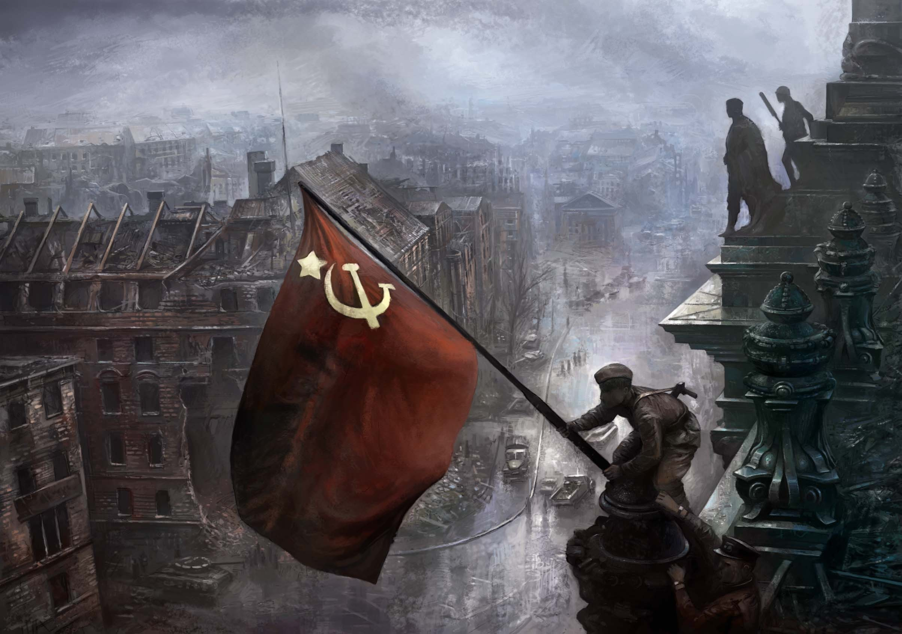

II Guerra Mundial
Introducción a la Segunda Guerra Mundial
La Segunda Guerra Mundial fue un conflicto devastador que se extendió desde 1939 hasta 1945, involucrando a la mayoría de las naciones del mundo en dos alianzas opuestas: los Aliados y las Potencias del Eje. Este conflicto fue el teatro de algunas de las mayores batallas de la historia, el uso de armas nucleares y el escenario de atroces crímenes contra la humanidad, incluido el Holocausto. La guerra comenzó con la invasión de Polonia por parte de Alemania, seguida rápidamente por la declaración de guerra de Francia y el Reino Unido, expandiéndose rápidamente a nivel mundial.
La Segunda Guerra Mundial se caracterizó por su inmensa escala y totalidad, con frentes de batalla en Europa, África, Asia y el Pacífico. La introducción de tecnología avanzada y tácticas de guerra, como el blitzkrieg alemán, la guerra aérea estratégica y las batallas de portaaviones, transformaron el arte de la guerra. La devastación causada por este conflicto fue sin precedentes, con millones de muertes, incluidas numerosas víctimas civiles debido a bombardeos, genocidios y el uso de armas atómicas.
Las causas de la Segunda Guerra Mundial son multifacéticas, incluyendo el resentimiento alemán por las duras condiciones del Tratado de Versalles, el ascenso de regímenes totalitarios en Alemania, Italia y Japón, y la fallida política de apaciguamiento de las democracias occidentales. El expansionismo agresivo de las Potencias del Eje desafió el orden internacional establecido, llevando al mundo nuevamente a un conflicto global.
Durante los primeros años de la guerra, las Potencias del Eje lograron rápidas y significativas victorias, conquistando gran parte de Europa, Asia y el Pacífico. Sin embargo, la marea de la guerra cambió con eventos como la Batalla de Stalingrado, el ataque a Pearl Harbor y la entrada de Estados Unidos en la guerra, lo que eventualmente inclinaría la balanza a favor de los Aliados.
La Segunda Guerra Mundial no solo fue una lucha por el territorio, sino también una batalla de ideologías, enfrentando a las democracias liberales y el comunismo contra el fascismo y el militarismo. El resultado de la guerra y los acuerdos de posguerra, incluidas las conferencias de Yalta y Potsdam, establecerían las bases para el orden mundial de la posguerra y darían inicio a la Guerra Fría.
Principales Potencias en Conflicto
Las Potencias del Eje, lideradas por Alemania, Italia y Japón, buscaron redefinir el equilibrio de poder a través de la expansión territorial y el dominio militar. Su agresión desencadenó la resistencia de las naciones Aliadas, lideradas por el Reino Unido, la Unión Soviética, China y Estados Unidos, que se unieron para restaurar la paz y el orden internacional.
Alemania, bajo el liderazgo de Adolf Hitler, buscó revertir los términos del Tratado de Versalles y establecer un "espacio vital" para el pueblo alemán. La Italia fascista de Mussolini anhelaba un nuevo Imperio Romano en el Mediterráneo, y el Japón imperial, guiado por la noción de su destino manifiesto, aspiraba a dominar Asia y el Pacífico.
Los Aliados, a pesar de sus diferencias ideológicas, compartieron el objetivo común de derrotar a las Potencias del Eje. La Unión Soviética, a pesar de su inicial no agresión con Alemania, se convirtió en uno de los miembros más afectados y decisivos de los Aliados tras la invasión alemana en 1941. Estados Unidos, inicialmente reacio a involucrarse en otro conflicto europeo, se convirtió en una fuerza crucial para los Aliados después del ataque japonés a Pearl Harbor.
La colaboración entre los Aliados fue clave para su éxito, destacando la importancia de la cooperación internacional frente a amenazas globales. La coordinación en múltiples frentes de batalla, el apoyo económico a través del programa de Préstamo y Arriendo y las conferencias estratégicas entre líderes aliados facilitaron una ofensiva concertada contra las Potencias del Eje.
El conflicto entre las Potencias del Eje y los Aliados fue más que una lucha militar; fue una confrontación de valores y sistemas de gobierno. La victoria de los Aliados no solo significó el fin de las ambiciones expansionistas del Eje, sino también la afirmación de principios democráticos y la formación de las Naciones Unidas, con la esperanza de prevenir futuros conflictos globales.
Grandes Batallas y Campañas
Las grandes batallas y campañas de la Segunda Guerra Mundial, desde el blitzkrieg en Polonia y Francia hasta las épicas confrontaciones en Stalingrado y el Pacífico, demostraron la escala y la ferocidad del conflicto. Estas batallas no solo fueron decisivas en términos militares, sino que también tuvieron un profundo impacto psicológico y político en las naciones involucradas.
La Batalla de Stalingrado fue un punto de inflexión en el Frente Oriental, marcando el comienzo del retroceso alemán ante el avance implacable del Ejército Rojo. Esta batalla, una de las más sangrientas de la historia, simbolizó la determinación soviética y la falla estratégica de la Wehrmacht alemana.
En el Pacífico, la Batalla de Midway se destacó como un momento crítico que cambió el curso de la guerra a favor de los Aliados. La habilidad de Estados Unidos para anticipar y contrarrestar el ataque japonés demostró la importancia de la inteligencia y la innovación tecnológica en la guerra moderna.
El Día D, la invasión aliada de Normandía, fue una operación masiva que abrió un segundo frente en Europa, presionando aún más a las ya extendidas fuerzas alemanas. Esta invasión no solo fue un logro logístico impresionante, sino que también simbolizó la unidad y el compromiso de los Aliados para liberar Europa del control nazi.
La campaña en el norte de África, incluyendo batallas como El Alamein, y la campaña italiana, destacaron la importancia de la estrategia y la movilidad en terrenos desafiantes. Estas campañas debilitaron aún más a las Potencias del Eje y demostraron la capacidad de los Aliados para coordinar operaciones en múltiples teatros de guerra.
La Guerra de Tecnología e Innovación
La Segunda Guerra Mundial fue un periodo de rápida innovación tecnológica, con el desarrollo de armas avanzadas, como los tanques Tiger y Sherman, aviones de combate como el Spitfire y el Zero, y la creación de la primera bomba atómica. Estas innovaciones no solo cambiaron el curso de la guerra, sino que también transformaron el futuro del conflicto armado.
La encriptación y la inteligencia jugaron roles cruciales en la guerra, destacando la importancia de la información y el espionaje. La máquina Enigma alemana y su eventual desciframiento por parte de los Aliados es un ejemplo de cómo la guerra también se libró en el ámbito de la inteligencia.
La logística y la producción de guerra también experimentaron avances significativos, con la implementación de técnicas de producción en masa y la gestión eficiente de recursos. La capacidad de Estados Unidos para producir material de guerra en grandes cantidades fue un factor determinante en la capacidad de los Aliados para sostener operaciones a largo plazo.
La medicina de guerra avanzó considerablemente, mejorando el tratamiento de heridas y enfermedades. Los avances en medicina, cirugía y psicología no solo salvaron vidas, sino que también mejoraron la calidad de vida de los veteranos después de la guerra.
La guerra también impulsó avances en ciencia y tecnología fuera del ámbito militar, incluyendo la aviación, la energía nuclear y la informática. Estos desarrollos tendrían profundas implicaciones en la sociedad y la economía en las décadas posteriores a la guerra.
El Frente Doméstico y la Economía de Guerra
El frente doméstico en los países involucrados en la Segunda Guerra Mundial experimentó cambios profundos, con la movilización total de la sociedad hacia el esfuerzo bélico. La economía de guerra requirió la conversión de industrias civiles en militares, la racionalización de alimentos y recursos, y la implementación de medidas para aumentar la producción y la eficiencia.
Las mujeres desempeñaron un papel crucial en el frente doméstico, asumiendo trabajos en fábricas, servicios de emergencia y roles administrativos, desafiando las normas tradicionales de género y contribuyendo significativamente al esfuerzo de guerra.
La propaganda se utilizó ampliamente para mantener la moral alta, fomentar el reclutamiento y promover el ahorro y la eficiencia en el uso de recursos. Campañas icónicas, como "Keep Calm and Carry On" en el Reino Unido y los carteles de "Rosie the Riveter" en Estados Unidos, se convirtieron en símbolos duraderos de la resistencia y unidad nacional.
Los civiles también enfrentaron las duras realidades de la guerra, incluidos los bombardeos aéreos sobre ciudades como Londres, Berlín y Tokio, que causaron devastación y pérdida de vidas. La experiencia del frente doméstico subrayó la totalidad de la guerra moderna, borrando las líneas entre los frentes de batalla y la vida civil.
La economía de guerra también llevó a la cooperación internacional entre los Aliados, incluyendo acuerdos económicos y el programa de Préstamo y Arriendo de Estados Unidos, que proporcionó apoyo crucial a naciones como el Reino Unido y la Unión Soviética, fortaleciendo la alianza contra las Potencias del Eje.
Consecuencias y Legado de la Guerra
La Segunda Guerra Mundial tuvo consecuencias profundas y duraderas, remodelando el orden geopolítico, económico y social del siglo XX. La guerra resultó en la muerte de millones de personas, la destrucción de ciudades y la desestabilización de regiones enteras, dejando cicatrices que perduran hasta hoy.
La creación de la Organización de las Naciones Unidas marcó un esfuerzo por establecer un foro internacional para la resolución de conflictos y la promoción de la paz, reflejando las lecciones aprendidas de las fallas de la Sociedad de Naciones y el deseo de prevenir futuras guerras mundiales.
La guerra también aceleró el proceso de descolonización, ya que las naciones colonizadas buscaron la independencia y la autodeterminación en el nuevo orden mundial. La transformación del mapa político global fue acompañada por la lucha por los derechos civiles y la igualdad en muchas partes del mundo.
El conflicto estableció las condiciones para la Guerra Fría, dividiendo al mundo en esferas de influencia lideradas por Estados Unidos y la Unión Soviética. Esta división ideológica y política definiría las relaciones internacionales y los conflictos regionales durante las siguientes décadas.
El legado cultural de la Segunda Guerra Mundial es vasto, influenciando el arte, la literatura, el cine y la memoria colectiva. La guerra ha sido objeto de innumerables obras que exploran sus tragedias, héroes y villanos, y sigue siendo un tema de reflexión sobre la capacidad humana para tanto la destrucción como la resiliencia.
El Final de la Guerra y el Tratado de Versalles
El armisticio de 1918 puso fin a los combates, pero fue el Tratado de Versalles el que oficialmente concluyó la guerra. Este tratado impuso duras sanciones a Alemania, sembrando las semillas de futuros conflictos. Las repercusiones de Versalles y otros tratados reconfiguraron el paisaje político internacional, dando lugar a nuevas naciones y alterando las fronteras existentes.
El Tratado de Versalles es a menudo criticado por su trato punitivo hacia Alemania, incluyendo reparaciones de guerra onerosas, la pérdida de territorios y limitaciones militares. Estas condiciones humillantes contribuyeron al resentimiento alemán y al ascenso del nacionalismo extremo.
Además de Alemania, otros imperios centrales enfrentaron desmembramientos y pérdidas territoriales. Austria-Hungría se disolvió en varios estados nacionales, mientras que el Imperio Otomano vio el fin de su control sobre vastas regiones del Medio Oriente, estableciendo el escenario para futuros conflictos en la región.
El tratado también estableció la Sociedad de Naciones, un precursor de las Naciones Unidas, con el objetivo de mantener la paz y prevenir futuros conflictos. Sin embargo, la eficacia de la Sociedad se vio limitada por la ausencia de potencias clave como Estados Unidos y por su incapacidad para imponer decisiones.
A pesar de sus intenciones, el Tratado de Versalles y los acuerdos relacionados no lograron establecer una paz duradera. Las tensiones no resueltas y las injusticias percibidas contribuyeron al estallido de la Segunda Guerra Mundial, demostrando la dificultad de construir una paz justa y sostenible en el posguerra.
Reflexiones Finales
La Segunda Guerra Mundial, con toda su devastación y heroísmo, sigue siendo un recordatorio poderoso de las consecuencias de la guerra y la importancia de trabajar hacia la paz y la comprensión entre las naciones. El estudio de este conflicto ofrece lecciones valiosas sobre diplomacia, cooperación internacional y la necesidad de defender los principios democráticos y los derechos humanos.
La memoria de la guerra y de aquellos que sacrificaron sus vidas es fundamental para apreciar el valor de la paz y la estabilidad que a menudo damos por sentado. Los monumentos, museos y ceremonias de conmemoración en todo el mundo sirven como homenaje a las víctimas y como recordatorio de los horrores de la guerra.
La Segunda Guerra Mundial también resalta la capacidad de la humanidad para superar divisiones y reconstruir en tiempos de paz. La reconstrucción de Europa y Asia en las décadas posteriores a la guerra, aunque llena de desafíos, demostró la resiliencia y el deseo de progreso y unidad.
El legado de la guerra en la ciencia, la tecnología y las artes continúa influyendo en nuestra sociedad, desde los avances en medicina y computación hasta las representaciones culturales que buscan comprender y procesar el impacto del conflicto.
Reflexionar sobre la Segunda Guerra Mundial nos obliga a considerar nuestro papel en la promoción de la paz y la justicia en el mundo contemporáneo. Recordando el pasado, podemos esforzarnos por construir un futuro más pacífico, demostrando que las lecciones de la guerra han sido aprendidas y que los sacrificios de aquellos que vivieron a través de ella no fueron en vano.